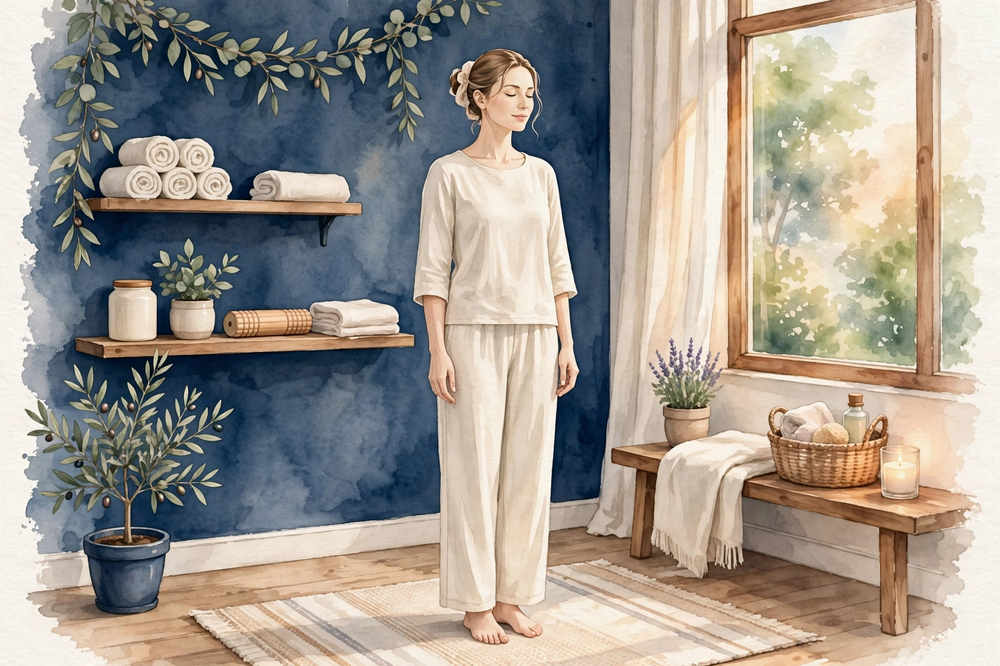

三ノ宮でヒールの日の足ケア巡り・冷え

仕事の日も、お出かけの日も、ヒールを履いた日の夕方は足が別人のように疲れている。つま先側に体重が寄り、ふくらはぎは張り、足裏はジンジンする。ヒールの日の足の疲れは、かかとが上がった姿勢ならではの負担の蓄積です。ヒールをやめるのではなく、仕組みを知って付き合い方を整えることが大切です。
ステラスピカでは、ヒールの日に負担が集中するふくらはぎと足裏を中心に、前重心で崩れたバランス全体を見立てます。
ヒールを履いた日の足の疲れはどんな状態か
ヒールを履くと、かかとが持ち上がった分だけ重心がつま先側へ移動します。足裏では指の付け根あたりに圧が集中し、ふくらはぎは常につま先立ちに近い状態で体を支え続けます。膝や腰もバランスを取るために働き、夕方には足裏の痛だるさとふくらはぎの張りが同時に表れやすくなります。
細いヒールでは足首が不安定で、歩くたびに脚全体が微調整を繰り返します。帰宅して靴を脱いだときにどっと疲れが出るのは、この負担の積み重ねのためです。履く頻度が高い方ほど、ふくらはぎの張りが日常化しやすくなります。
こんなサインはありませんか？ヒールの日の足チェック
- 夕方になると、足の指の付け根あたりがジンジンする
- ふくらはぎが張って、触ると固く感じる
- 帰宅してヒールを脱ぐと、解放感と同時に強い疲れが出る
- 足裏の皮が厚くなってきた場所がある
- 外反気味の指の付け根が靴に当たって痛むことがある
- ヒールを履いた翌日も、ふくらはぎの張りが残る
- 歩くと足首がぐらつく感じがあり、踏ん張ることが多い
- 膝や腰まで疲れが広がる日がある
ヒールを履いた日の足の疲れにつながりやすい要因
- ヒールの高さ ― かかとが高いほど重心は前に寄り、つま先側への圧とふくらはぎの緊張が増えます。日によって高さを使い分けることが、負担の分散につながります。
- つま先の形 ― 先の細いデザインは指を締めつけ、足裏の圧を一部に集中させます。指が自由に広げられる形かどうかも、夕方の疲れ方を左右します。
- 履く時間の長さ ― 短時間の外出と一日勤務では、蓄積する負担が大きく変わります。履く時間が長い日は、途中で座る・履き替える場面を作れるかが鍵です。
- 歩く距離と路面 ― 駅までの徒歩や石畳、坂道の多い移動は負担を増やします。神戸の坂道では、特にふくらはぎへの負荷が大きくなります。
- ふくらはぎの柔軟性不足 ― ふくらはぎが硬いままだと、つま先立ちに近い姿勢での負担を受け止めきれず、張りが強くなります。日常的なストレッチが土台作りになります。
- 帰宅後のケア不足 ― その日の張りをその日のうちにほぐさないと、翌日以降に持ち越します。ヒールの日こそ、帰宅後の足湯やストレッチが大切です。
図1｜ヒールの日に負担が集まるふくらはぎ・足裏・膝（横向き）

東洋医学から見た考え方
東洋医学では、脚の巡りと重だるさは「水」の巡りの滞りと関係づけて考えます。ヒールの日はふくらはぎの緊張が続くためポンプの働きが偏り、夕方の張りが出やすくなります。ふくらはぎの裏を通る膀胱経と、脚の内側を通る脾経は、この日に負担のかかるラインと重なる経絡です。
当店では、足裏からふくらはぎ、太ももの内側までを流れでほぐし、前重心で偏った負担を脚全体で整える組み立てを行います。足指の付け根など、圧が集中した場所にも丁寧に触れていきます。
代表的なツボ
ヒールの日のケアに役立つ代表的なツボを3つご紹介します。帰宅後の足湯のあとなど、温まった状態で行うと取り入れやすくなります。
ふくらはぎの裏側、つま先立ちをしたときに筋肉が盛り上がる境目のくぼみにあります。ヒールの日はまさにこの姿勢が続くため、張りの中心になりやすいツボです。両手でふくらはぎをつかみ、親指でゆっくり押してください。
足裏、指を曲げたときにくぼむ場所です。ヒールで圧が集中する指の付け根に近く、一日の負担が集まる場所にあります。親指で押し込むほか、足湯のあとに足裏全体をもみほぐす中でも意識したい点です。
内くるぶしの一番高いところから指4本分ほど上、すねの骨のすぐ後ろにあります。脚の内側の巡りと関わるツボで、夕方の重だるさ対策に広く知られます。両手の親指を重ねてゆっくり押すと心地よく感じられます。
図2｜ヒールの日に関わるツボの位置（背面）

おすすめの施術
おすすめ：オイルマッサージ＋美容整体
ヒールの日の施術は、足裏とふくらはぎを手厚く組み立てるのが基本です。オイルマッサージでは足裏全体と指の付け根を丁寧にほぐし、ふくらはぎはつま先立ちの緊張をゆるめるよう、下から上へ流す手技と深くほぐす手技を組み合わせます。
美容整体では、前重心で崩れた立ち姿勢のバランスや、膝・股関節の動きを確認します。ヒールの高さの使い分けや、帰宅後のケアの順番についてもご案内できます。お出かけや式典の前後のケアとしてもお使いいただける内容です。
自宅でできるセルフケア
ヒールの日の負担は、帰宅後の15分のケアで印象が変わります。履く日の習慣として取り入れてみてください。
- 1. 壁を使ったふくらはぎストレッチ壁に両手をつき、片脚を後ろに引いてかかとを床につけたまま、壁を押すように体重を前に移します。ふくらはぎの裏が伸びる感覚で20秒キープし、左右行います。
- 2. 足指のグーパー足の指を握るように曲げてグー、思いきり開いてパーを繰り返します。10回を目安に。締めつけられていた指がほぐれ、足裏全体の巡りも促されます。お風呂の中でも行えます。
- 3. 帰宅後の足湯洗面器にお湯を張り、足首まで10分ほど浸します。温まったあとに承山や湧泉を押すと、ツボの位置も分かりやすく、張りがゆるみやすくなります。
- 4. ヒールの高さと履く時間の工夫一日履く日は低め、短時間の日は高めと、高さを使い分けます。置き靴の用意や帰りの履き替えも、負担の蓄積を防ぎます。
図3｜ふくらはぎストレッチ（壁押し）の動き（横向き）
場面別の注意
仕事の日
一日履く日は、座れる場面で足首を回し、ふくらはぎを軽くもむ習慣を。置き靴やスリッパに履き替える時間を少しでも作ると、夕方の張りの出方が変わります。
お出かけ・イベントの日
歩く距離が読みにくい日は、帰り用の歩きやすい靴を荷物に入れておくと安心です。イベントのあとの足湯とストレッチまでを、その日の予定に組み込んでおきましょう。
結婚式などのフォーマルな日
慣れない高いヒールで長時間過ごす日は、負担が特に大きくなります。前日に湯船で温めておく、当日は合間に座る時間を作るなど、前後の備えが脚を守ります。
受診の目安
次のような場合は、まず医療機関への受診をご検討ください。
- 足の指の付け根に強い痛みや腫れが続いている
- 外反気味の部分が赤く腫れて、靴に当たらなくても痛む
- 足裏にしびれが広がってきた
- 片脚だけ急に腫れて熱を持つ
- 歩くことが難しいほどの痛みがある
当店は医療機関ではなく、診断は行いません。気になる症状がある場合は、施術の前に医療機関でご相談ください。
よくある質問
ヒールは履かない方がいいのですか？
無理にやめる必要はないと考えています。高さの使い分けや履く時間の工夫、帰宅後のケアで負担は調整できます。痛みが強い日は無理をせず、歩きやすい靴を選ぶ判断も大切です。
施術はヒールを履いた当日でも受けられますか？
はい。むしろ当日のうちにほぐす方が、張りを持ち越しにくくなります。当店は夜22時までの営業ですので、仕事やお出かけの帰りにお立ち寄りいただけます。現在は開院準備中のため、受付開始をお待ちください。
ふくらはぎが太くなった気がします。関係ありますか？
ヒールの日の緊張が続くと、ふくらはぎが張った状態で日常化し、太く感じることがあります。ストレッチとケアで張りをゆるめることは見た目の印象にもつながりますが、効果の断定はできませんので、状態を見ながらご案内します。
足裏の皮が厚くなるのはなぜですか？
圧が集中する場所では、皮膚が身を守るために厚くなりやすいと考えられます。保湿と合わせて、圧のかかり方を見直すことが大切です。痛みを伴う場合は、皮膚科や専門機関での相談もご検討ください。
関連するお悩みページ
関連する経絡ページ
ご予約
ステラスピカ（神戸・三ノ宮／女性専用）｜オイルマッサージ・美容整体 90分 10,000円｜月〜土 17:00〜22:00・完全予約制
現在は近日開院予定のため、ご予約の受付はまだ開始していません。開院のご案内までしばらくお待ちください。開院後は、ご予約の際に「ヒールの日の足の疲れが気になる」とお伝えいただければ、その日の状態に合わせて施術を組み立てます。